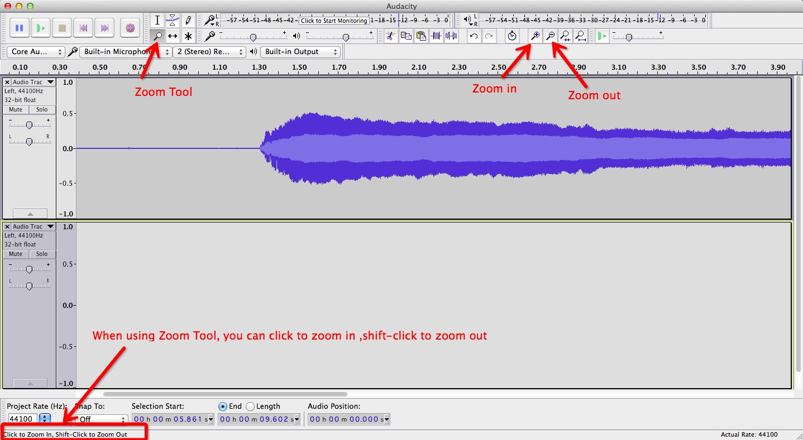

Perform the important editing tasks in your DAW
Created by @macy
About Me
- Macy from China
- A Front-end Engineer
- Intending to be a guitar player
Editing tasks
Editing is an essential procedure
Each DAW has a lot of editing capabilities
Pre-prepared
Necessary audio tracks for editing
Trimming
To adjust a region's balance or trim it

See the result
Separating
You can separate or split or cut a region.
See the result
Fades
Deal with a click or a pop of the region
In Audacity,we use Envelop Tool to create fades
See the result
Crossfade
To adjust a region's balance or trim it
To access a crossfade tracks by Effect
See the result
Zoom
To make a small edit by zooming way in, then zoom way back out
See the result
Name
Cycling
Repeat a small section of your music, so, you can fine tune that edit till it's perfect.
See the result
Markers
Define a specific location within your song
See the result

Merge
Make all regions together
Merging
See the result